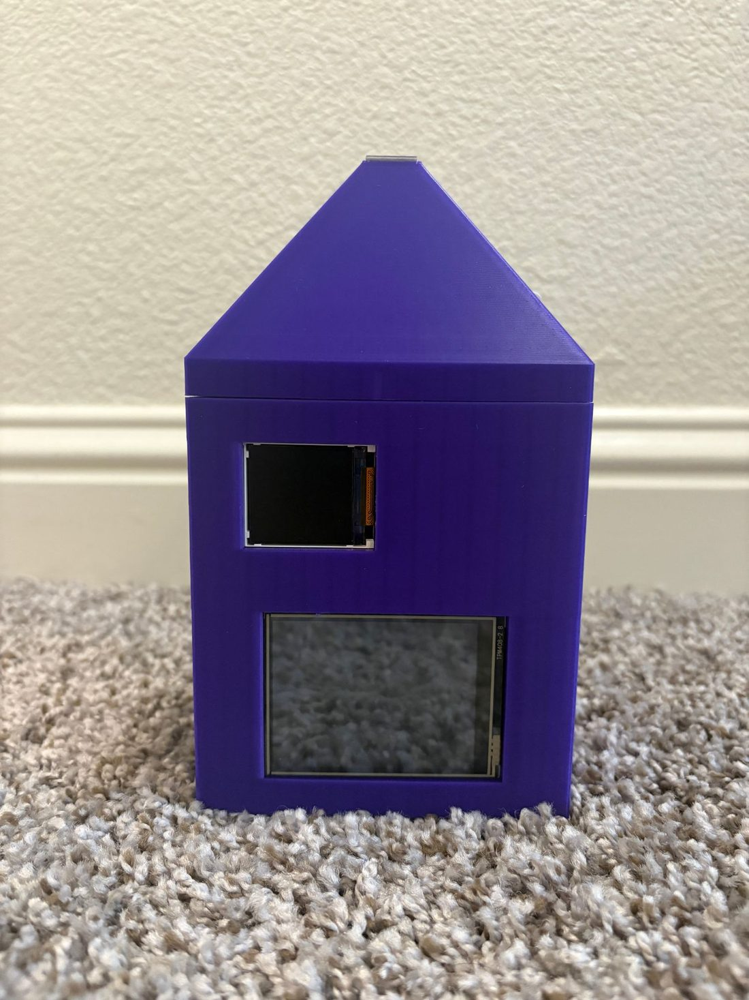

Solo project · Aug 2026 – present
Smart Nightstand Hub
A bedside display for weather, calendar events, live bus times, and an alarm — with no apps and no notifications to pull me back into my phone. Designed, printed, wired, and flashed from scratch for $24.79 in parts.

The problem
I was reaching for my phone first thing every morning for three things: the weather, my schedule, and whether I had time to catch the bus. Each of those took ten seconds and cost me twenty minutes, because the phone never gives you just the thing you asked for.
So I built a device that shows only those three things, has no notifications, and doubles as my alarm clock. It had to be small enough to live on my window sill, cheap enough to justify as a side project, and good enough that I'd actually keep using it.
What I did
Enclosure design
- Designed a compact three-part enclosure in SolidWorks — 11 × 8 × 16 cm — to house two displays, an ESP32, a speaker, an audio amplifier, and an environmental sensor, sized specifically to fit the window sill it lives on.
- Dimensioned every component with calipers and designed the housing around the real measurements rather than datasheet nominals.
- Made the assembly adhesive-free using press fits, internal ledges, and locating pegs. A snug-fitting roof locks a sliding back panel in place, so the whole thing comes apart for service without cutting glue.
- Reached a working fit in two print iterations by applying design for manufacturability and tolerancing — widening openings where tree supports couldn't be removed safely, and accounting for the ±0.2 mm or so an FDM printer actually holds.
Thermal & packaging decisions
- Thermally isolated the temperature sensor from the heat-generating electronics using a tapered top and a rear-panel airflow path. A sensor sitting next to a warm regulator reports the regulator's temperature, not the room's — this was the difference between a reading that means something and a reading that doesn't.
- Added ventilation, a USB-C port opening, and cutouts for both screens and the speaker, positioned so the wiring inside could actually reach them.
Electronics & debugging
- Soldered the power wiring to a buck converter and integrated the sensor, both displays, and the audio amplifier.
- Traced a full display failure to a mis-held GPIO pin. The boot state of that pin was holding a line low. I found it with pull-up/pull-down testing and a multimeter, then rewired each display and the sensor onto a dedicated bus — which also cleared a recurring intermittent connection fault.
Firmware
- Developed the C++ firmware with AI-assisted tools (Claude Code), integrating weather, calendar (iCal), and transit APIs into a two-screen interface with an alarm.
- Validated each subsystem on the hardware — displays, sensor, audio, network, alarm — and debugged the wiring faults that testing exposed. It's been running as my daily alarm since.
On the AI-assisted part
I used Claude Code to write the firmware, and I'm specific about what that means: my job was the hardware. I wired and tested each subsystem, reported what I actually observed, and tracked down the physical faults — including a pin the board was holding low, which no amount of code review would have found. I can walk through what the firmware does.
Gallery
Design and build


In progress Active
I'm currently creating GD&T drawings for the enclosure to properly define the fits between the roof, the sliding panel, and the main body. The interesting constraint is that FDM parts vary by roughly ±0.2 mm, so the callouts have to reflect what the printer can actually hold rather than what the model says.
What I'd change
Fewer cables. The inside is messier than I want because I picked parts with long pre-terminated leads. Higher-quality modules with fewer connections — or a small custom PCB to replace the point-to-point wiring — would clean up the internal volume and remove most of the intermittent-connection risk at the source instead of working around it.
Reference
By the numbers
| Enclosure size | 11 × 8 × 16 cm |
|---|---|
| Enclosure parts | 3 (body, roof, sliding panel) |
| Print iterations to working fit | 2 |
| Material | PLA, FDM |
| Assembly method | Press fit, ledges, locating pegs — no adhesive |
| Compute | ESP32 |
| Displays | 2 |
| Data sources | Weather · iCal calendar · transit |
| Total parts cost | $24.79 |